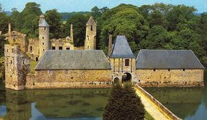
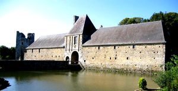
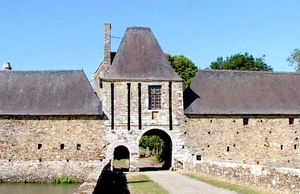
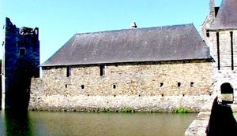
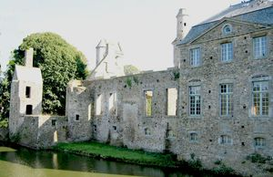
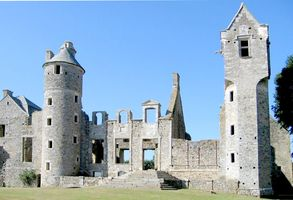

Recensement Jean-Claude Truffet
| Département | 50 — Manche |
| Canton | Coutances |
| Commune | Gratot |
| Type d'édifice | Forteresse |
| Période d'origine | XIII-XIV |
| Coordonnées GPS | 49° 04' 06,6" Nord, 1° 29' 23,42" Ouest |






GRATOT, le premier château de Gratot fut construit au XIVe siècle a appartenu pendant cinq siècles à la famille dArgouges, entré par alliance en 1251 et ce, jusquen 1777. Il devint au XVIIIe siècle le siège dun marquisat par la famille d'Argouges, Barons de Gratot depuis 1251. Bâti, remanié et agrandi au cours des sept siècles de son histoire, au XVIIIe siècle Gratot érigé en marquisat, c'est en 1771 que la Famille d'Argouges vendra le château à Luc-Marie du Homméel, puis à Guillaume-François Douessey, au XIXe siècle le domaine passe aux familles Quesnel d'Hector puis aux Quesnel de la Morinière avant d'être acquis par l'éditeur Lemarre. Vendu à des marchands de bien en 1924 inhabité tombe en ruine. C'est à partir de 1968, grâce au courage de nombreux bénévoles que sa rénovation fut entreprise, Gratot va retrouver, peu à peu, son aspect antérieur. Éléments protégés MH : les ruines du château ; les façades et les toitures des communs avec la poterne d'entrée ; les douves: classement par arrêté du 4 août 1970.
GRATOT, la construction date du XIIIe siècle, de style Médiéval, il fut maintes fois transformé jusqu'à son apogée au XVIIIe siècle, avant d'être laissé à l'abandon au XIXe siècle et, de devenir aujourd'hui un lieu touristique. Le château de Gratot a été remanié au XVe et XVIe siècle, na jamais été un château comme les autres, riche des apports architecturaux de chaque époque. Ses murs parlent toujours du temps dAndaine, la fée des sources claires. Il subira de nombreuses modifications jusqu'au XVIIIe siècle, il servira d'entrepôt pour y mettre à l'abri le fourrage des fermiers du secteur. Laissé à l'abandon au XIXe siècle par ses différents propriétaires qui se sont succéder sans entretenir l'édifice qui est tombé lentement en ruine, envahi par le lierre et abandonné au début du XXe siècle. Il subsiste des douves profondes et une grande porte carrée flanquée de deux poternes défensives. La cour d'honneur est ceinte de bâtiments trapus percés de trous de meurtrières. La demeure ségnieuriale révèle quelques prémices de la Renaissance. L'originalité du château de Gratot réside dans la belle tour polygonale dont le sommet carré en encorbellement est agrémenté d'une magnifique fenêtre Renaissance dans l'axe du toit à bâtière épousant un magnifique galbe orné d'acanthes. Il a été mainte fois transformé, jusqu'à son apogée au XVIIIe siècle, avant d'être laissé à l'abandon au XIXe siècle. Aujourd'hui, c'est devenu un lieu touristique. En 2003, le château du Gratot a reçu près de 12 600 visiteurs, est ouvert au Public et se visite, inscrit aux M.H. depuis 1970. Il existe aussi le Manoir de Chanteloup à découvrir sur la commune (XVIe siècle).
Famille dArgouges
"
Château de Gratot GPS: 49° 04' 06,6" Nord, 1° 29' 23,42" Ouest